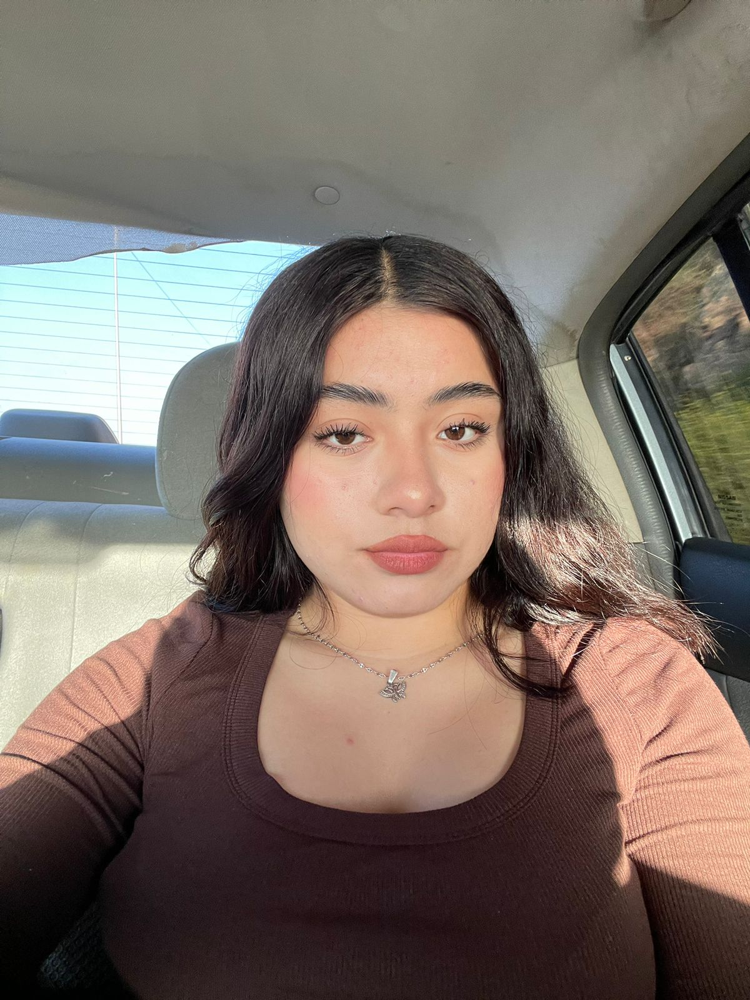

Evelin Lara
Maybelline es una marca reconocida por su relación calidad-precio.
Sus máscaras de pestañas, como la icónica “Great Lash”, ofrecen volumen y longitud sin dejar grumos. Además,
Maybelline cuenta con una amplia gama de bases de maquillaje que se adaptan a diferentes tonos de piel.!